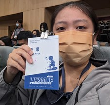

雪朱
Github 、Dicord ID：meowmeow
你好~我是雪朱，來自彰化和美，畢業於中興大學資工研究所。目前在彰化基督醫院資訊部服務，期待能在此發揮網頁專長和繼續做中學習網頁和專案開發知識！
與我聯絡Github 、Dicord ID：meowmeow
大名
自我介紹 聯絡資訊
Eshiunm
您好！，我是剛進入前端領域兩個多月的菜鳥， 我叫 Eshiunm，目前對於前端技術有著濃厚的興趣， 期望自己未來能夠設計出好用且高效的網頁！